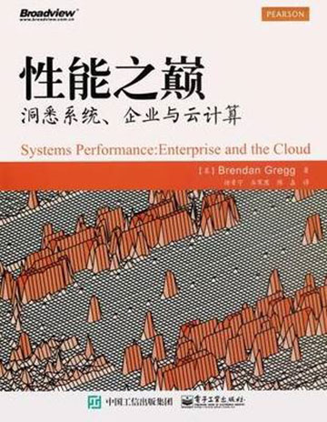
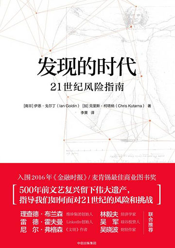

-
IT人在路上创新·创业 101
信息技术是如日中天的行业，创业更是时下炙手可热的社会焦点。
《IT人在路上》借鉴服务学习（Service Learning）的框架理念，通过大学生采访者，揭示12位创业者在创业过程中的心路历程，并从求学、家庭教育、业余爱好和职业发展等方面剖析一个创业者成功的奥秘。 -
信息简史一部历史 一个理论 一股洪流
国家图书馆第九届文津奖获奖作品，信息视角的人类文明史
作为《混沌》、《费曼传》、《越来越快》、《牛顿传》等畅销书的作者，格雷克不仅在书中细致还原了历史细节，通俗解释了各种理论，还生动刻画了几位不为大众所知的人物：可编程计算机先驱、超越时代的查尔斯•巴贝奇，第一位程序员、诗人拜伦之女爱达•拜伦，计算机科学之父、天妒英才的阿兰•图灵，以及全书的主人公、信息论之父克劳德•香农。 -

性能之巅洞悉系统、企业与云计算
基于Linux 和Solaris系统阐述了适用于所有系统的性能理论和方法，将业界普遍承认的性能方法、工具和指标收集于本书之中。阅读本书，你能洞悉系统运作的方式，学习到分析和提高系统与应用程序性能的方法，这些性能方法同样适用于大型企业与云计算这类最为复杂的环境的性能分析与调优。
-

发现的时代21世纪风险指南
作者洞察了处在新复兴时期的世界，并提出了一个问题，我们应该如何避免混乱和破坏，才能更多地分享进步所带来的好处？探讨了处在新复兴时期的世界，并提出，我们如何更广泛地分享前所未有的进步所带来的好处？我们如何忍受加速变化所产生的不可避免的动荡？我们如何在这个错综复杂的混沌时期蓬勃发展?
-
科技金融驱动国家创新的力量
由交行首席经济学家连平领衔、近十位资深金融专家共同参与的课题组，深入调研了美国、日本、德国、以色列四个创新大国及北京、上海、杭州、苏州四个创新城市的科技金融实践，创新性地提出产业集聚的分析方法，强调科技金融的创新结合已形成一种新的产业形态，并从商业银行的角度提出了相关的组织架构、客户选择、产品定位及团队建设建议，不仅在该领域的研究中有领先性，也具有很强的现实性。
-
R图形化数据分析Graphing Data with R
本书介绍如何使用图形化的方法来分析和理解复杂的数据，该方法突出数据中重要的关联和分布趋势，并使用尽可能简单的视觉元素来呈现尽可能丰富的信息。本书重点介绍如何理解数据分析的图形元素，以及如何使用R生成书中涉及的各种图形。
-
TMMi精华目标驱动的测试过程改进
TMMi（测试成熟度模型集成）是国际非盈利性组织TMMi基金会开发和维护的一个测试成熟度模型，TMMi（测试成熟度模型集成）是国际非盈利性组织TMMi基金会开发和维护的一个测试成熟度模型。使用TMMi，组织可以通过有资质的评估师来客观地评估和改进他们的测试过程。本书内容对模型的精华部分进行了概要描述
-
HTTP抓包实战驱动国家创新的力量
本课程的核心思想可以总结为3个词：包、抓包和发包。本课程从HTTP协议和HTTPS协议讲起，讲了HTTP数据包、Fiddler抓包工具和JMeter工具。然后讲解了如何使用Fiddler来抓HTTP包，如何分析HTTP包。最后介绍了使用JMeter等工具来发送HTTP包，从而实现软件自动化测试。
-
分布式对象存储原理、架构及Go语言实现
本书从云存储的需求出发讲述对象存储的原理，循序渐进地建立起一个分布式对象存储的架构，并且实现出来。全书共8章，分别涉及对象存储简介、可扩展分布式系统、元数据服务、数据校验和去重、数据冗余处理、断点续传、数据压缩和数据维护等。本书选择用来实现分布式对象存储软件的编程语言是当前流行的Go语言。
-

Scratch 2.0少儿游戏趣味编程Scratch 2.0少儿游戏趣味编程
本书通过精心选取的、不同难度级别的14款趣味游戏的开发过程，将Scratch程序设计的基础、概念、方法和动手实践等系统联系起来，教会读者在游戏开发的乐趣中，掌握Scratch编程技能。本书首先带领读者认识Scratch，然后介绍了Scratch编程必备的一些概念和基础知识，并按照初级游戏开发、中级游戏开发和高级游戏开发的顺序，循序渐近，由易到难，让读者逐步掌握和熟练Scratch趣味编程。
-

青少年学Python荣耀博士亲自讲解
Python是青少年学习人工智能应用编程的首选语言。本书以计算和算法思维训练为导向，从介绍计算机基本工作原理和Python编程基础知识入手，进而深入介绍数据结构和过程式编程、面向对象编程等较高级主题。本书图文并茂，习题丰富，讲解细致。
-
Spring实战Spring in Action
本书是国内外最畅销的Spring学习图书，因其合理的章节安排和通俗易懂的语言广受IT从业者青睐和欢迎，第四版全面介绍了Spring的架构理念和实战用法，是Java企业级开发的必备图书
-
Python神经网络编程
本书揭示神经网络背后的概念，并介绍如何通过Python实现神经网络，适合想要从事神经网络研究和探索的读者学习参考，也适合对人工智能、机器学习和深度学习等相关领域感兴趣的读者阅读。
-
《C++ Primer Plus》
《C++ Primer Plus》